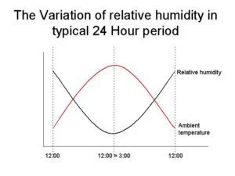

– why it is perfect for your business
– why it is perfect for your business
Evaporative coolers use water evaporation to cool the air. This technique has been used in warmer climates for many years. As the effects of global warming are felt in Europe as well, the use of evaporative cooling is becoming more widespread. In ancient times, Arabs used to hang wet clothes to doors and windows to take advantage of air cooling through water evaporation. As the hot air passes to the wetted media (in this case the cloth), the water evaporates and the heat in the air is absorbed, which lowers the air temperature. Likewise, on days when heat causes discomfort, people often head off to lakes or the seaside in search of relief. Evaporative cooling is, in many ways, simulating the cooler conditions so often found near large expanses of water.
Evaporative cooling units only use water to cool the air. No chemical refrigerants are involved in the process. Moreover, Evaporative air conditioners use far less electricity compared to refrigerated systems: that all adds up to very responsible environmental and energy saving characteristics. No matter how hot it gets outside, evaporative coolers use the same amount of power and still deliver 100% fresh, cool air inside. This is in direct contrast to refrigerated systems, which require increasing amounts of power as outside temperatures rise. Evaporative coolers’ cost-saving capabilities actually increase, when the heat is at its highest. At the same time, their performance also increases as temperatures rise – again, in complete contrast to refrigerated systems. Using little electricity, no compressor and with low running costs, evaporative cooling is the perfect solution for industrial and commercial environments, that often have no cooling system installed at all. Air conditioning is not a viable option, because in warehouses or industrial plants, the capital and running costs would be extremely prohibitive for end-users. Furthermore, evaporative coolers use 100% fresh outside air. Outside air ventilation is now globally acknowledged as a core component of healthy and comfortable buildings. Evaporative cooling units bring 100% fresh air, never recirculating indoor air. This can be a great solution to improve Indoor Air Quality, as incoming air naturally pushes the stale air outside of the building from doors, windows or extract system.
The benefits of evaporative air conditioning are plenty, there’s never been a better time to invest in an evaporative air conditioner which is simple to maintain and operate and offers superior product performance. With energy prices escalating and summers typically involving heat waves, evaporative air conditioning offers a significant and increasing edge on refrigerated cooling, when it comes to energy efficiency, healthier air flow, performance and easy install and maintenance.
Amongst all types of evaporative cooling existing in the market, Seeley International design and manufacture Direct and Hyper-efficient Indirect Evaporative coolers.
In direct evaporative coolers, hot outside air is drawn through water-soaked cooling pads. As the air is pushed through these pads, water evaporates and heat in the air is absorbed, which lowers the air temperature. A fan then pushes the cool air throughout the building via a network of ducts. It is called direct evaporative cooling because the air is directly cooled thanks to water evaporation.
Do you want to learn more about direct evaporative cooling? Visit our dedicated page.
Indirect evaporative air conditioners use a hyper-efficient heat exchanger to produce 100% fresh, cool, outside air, with no added moisture. The fresh cold air produced by indirect evaporative coolers can be similar to that produced by refrigerated systems, with temperatures that approach the ambient dew-point temperature, using up to 80% less energy. The air is indirectly cooled by evaporation inside the core, therefore they are called indirect evaporative coolers.
Are you curious to understand how indirect evaporative cooling work? Visit our dedicated page.
Evaporation will take place when humidity is below 100% and the air absorbs water. Any given volume of air can hold a certain amount of water vapour and the degree of absorption will depend on the amount it is already holding. When we say that Relative Humidity (RH) is 30%, we say that air is 30% saturated and it could still hold water for a portion of 70%. It is the combination of temperature and humidity that creates human comfort, and Evaporative Air Coolers are used so widely around the world because they can create comfortable conditions. Furthermore, comfort is also improved by increasing air velocity in hot conditions and Direct Evaporative Air Coolers create sufficient air movement to also minimise the effects of humidity.
As we can see from the graph, humidity depends on the value of the temperature: during the portion of the day when temperatures are higher, relative humidity is lower. It is during these hot times that cooling is much more needed and it corresponds to the period when evaporative coolers work at their best (when relative humidity is lower). This time also correspond to working hours: this is why many companies decide to adopt evaporative cooling. Moreover, we said that outside air is pushed inside the building and doors and windows must be left open for air to escape (or extract fans installed). This way, also air saturated with water (with high humidity) is pushed out, part of the natural flow of healthy outside air that blows inside the building. Finally, Hyper-efficient indirect evaporative coolers do not add humidity to the air. We would normally think that evaporative cooling works in dry Southern European climates. In fact, evaporative cooling works perfectly in cities like Madrid, Seville, Rome or locations like Southern Spain and Italy, Greece, or continental France. Nevertheless, there are hundreds of units installed in Northern Europe, for example Belgium or Poland, that we consider humid climates. And…they work perfectly! It is all about choosing the right application, unit and properly size the project, both in terms of number of units and extract system. For all these reasons, evaporative coolers can be perfectly suitable for all the European climates.
Evaporative coolers use water for cooling instead of synthetic chemical refrigerants (CFC’s, HFC’s and HCFC’s). There are no CFC pollutant emissions from evaporative air conditioning and water consumption is moderate. That all adds up to very responsible environmental and energy saving characteristics. Evaporative coolers use far less electricity compared to refrigerated systems therefore, less fossil fuels such as coal and natural gas are consumed in the production of electricity. For example, direct evaporative coolers by Seeley International absorb 1.2 kW power3 to work: less than a hair drier! Nowadays, more than ever, indoor air quality is essential for any workplaces. Drawing fresh air from outdoors, evaporative coolers offer a great health advantage over refrigerated air conditioning, which recirculate the same stale air over and over. Moreover, direct evaporative cooling units provide humidification of the air, relieving dry nose and throat symptoms and asthma. Working in hot temperatures often causes heat stress and, in some cases, fainting and in rare (but not negligible) cases heat stroke. Improving temperatures in companies is therefore necessary and mandatory. Are you curious to see how ventilation is important to improve indoor air quality? Have a look at our article “Building ventilation and Covid19 containment guidances”
To view more FAQs please visit our comprehensive Frequently Asked Questions page.
References: